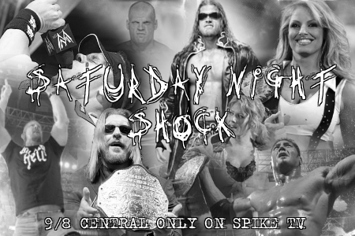

Results for January 16, 2010
Verizon Center, Washington, DC
The red and white pyros explode as the opening music plays. We scan across the arena packed with cheering fans with signs such as "Annabelle Jones Shock Champion," "Wanted Dead or Alive Alex Morgan," and "The Case Sisters’ #1 Fan".
Summer: Welcome to Saturday Night Shock. I’m Summer Breeze. Alongside me is my broadcast partner, Johnny Sorrow. Tonight, we will see the début of Vindicator as he takes on “Outlaw” Alex Morgan.
Johnny: That’s not all Summer. Following the controversial ending to the Shock Title tournament at Eve of Destruction, we will see Annabelle Jones defend her Shock Title against Shirlea Frost in our main event.
Summer: What a rematch that will be. You just know Shirlea is looking for revenge. Right now, though, the participants are in the ring for our first match.
Inside the ring, Bruce and the Postman circle one another. They move in and lock up. Bruce takes the Postman down with an arm drag and follows up with an arm lock, cinched in tight as they lay upon the mat. The Postman stretches his free arm out, just barely grasping the bottom rope. Referee Jason Burns calls for Bruce to break the hold.
Summer: Bruce Vain was a little too cocky there and thought to gain the early advantage.
Johnny: He should have maneuvered the Postman to the center of the ring to try a submission hold.
Both men are to their feet. The Postman ducks under a clothesline attempt then lifts Bruce up, dropping him down hard on his knee with an atomic drop. Bruce bounces up in pain as the Postman hits a running bulldog on his opponent. Rolling Bruce over, he hooks the leg as Jason Burns makes the count.
1.
2.
3. No! Bruce rolls a shoulder up.
Summer: That combination of an atomic drop and a running bulldog almost won the match for the Postman.
Johnny: Maybe, but it was not quite enough to get the job done.
The Postman goes to pull Bruce to his feet, but as he does, Bruce brings his shoulder into the other man’s gut once, twice, three times. As the Postman is bent over trying to catch his breath, Bruce hits the far ropes and rebounds with an attempted leg drop that the Postman avoids. The two men begin to exchange chops to the chest. Suddenly, the Postman’s eyes light up and he starts to shake.
Summer: The Postman is about to go postal!
Without any warning whatsoever, all of the lights in the arena go out.
Summer: What is going on?
Johnny: Hold me. I’m scared.
Summer: Get off of me!
The lights come back up and both the Postman and Bruce Vain are laid out in the middle of the ring as a huge monster in red and black wearing a matching mask over his face stands over the two men. Next to him stands a man in a red suit with long black cane with a silver skull in one hand and a microphone in the other.
Summer: No, it can’t be!
Johnny: IT IS! IT’S FATHER DAIMAN AND LEVIATHAN!
Summer: That’s not possible! LJ Black was Leviathan.
Father Damian: Oh, my children fear not the temptations of the great deceiver Lucifer. For though he holds sway over ICW, the Lord has sent his warrior, Leviathan, to rid ICW of the wanton harlots and corrupt men whom roam her halls. Though if any of you will give your heart to Jesus, you shall be spared the damnation to come.
Summer: What is this nut talking about?
Johnny: He obviously thinks this is Sunday school.
Father Damian: All of you have been deceived, for Lucifer himself walks among his Earthly name, LJ Black. Hear me well, LJ Black. You may think to hide your sins in the black of night, but our Almighty Father knows all. You cannot hide your sins from Him and soon the world will know of your great sins. You have forgotten, LJ, that in the end, the fire consumes us all.
The lights go out just as Leviathan raises his arms and drops them as fire erupts from all four ring posts in the dark arena. When the lights come back up, Father Damian and Leviathan are nowhere to be found.
Summer: That man gives me the creeps.
Johnny: No doubt he is certifiable. Right now, though, we need to get medical attention for those two men in the ring.
*****
We open back at the entrance to the arena. The doors swing open and the new ICW Shock Champion comes storming into the arena with her title belt slung over her shoulder. A frustrated look is on her face. She immediately walks up to a staff member.
Annabelle: Where is he?!
Staff: Where is who?
Annabelle: Pendragon?! The head of security!
The staff member points down the hall. Annabelle looks down and spies him.
Annabelle: Thanks.
Annabelle storms down the hall. She then approaches Alexander Pendragon.
Annabelle: We need to talk.
Alexander: About what?
Annabelle rolls her eyes.
Annabelle: Security issues! Specifically mine. My security is at risk. And I am the Shock Champion. Do you understand?
Alexander Pendragon glares angrily at Jones.
Alexander: I understand perfectly fine, Jones. Now get to the point.
Annabelle: The point is that there may be someone after me. Ok? You may have heard about it on the news.
Alexander nods.
Alexander: So I have.
Annabelle: Then I don’t need to say anything. Just please be on the lookout for anyone matching the description of a white female, auburn hair, about my age.
Alexander rolls her eyes.
Alexander: That’s real specific.
Annabelle: Oh shut up!
Annabelle storms off.
*****
Jimmy Landell, Jr.: The following contest is set for one fall. Introducing first, from Chicago, IL standing six feet, eleven point five inches and weighing 334 lbs, Vindicator!
"One Man Army" - The Prodigy w/Tom Morello plays as Vindicator makes his way to the ring
Jimmy Landell, Jr.: And his opponent from The Bronx, NY standing six feet, one inches and weighing 223 lbs, “The Outlaw” Alex Morgan!
Notorious Ecstasy hits the PA and the Outlaw himself appears on the entrance ramp, spreading his arms and simply basking in the moment. He eventually marches briskly down the ramp and leaps onto the apron, raising an arm before he leaps over the third rope. He climbs the turnbuckle and raises his arms, pausing only to run a hand through his hair. He jumps down and pulls down on the ropes, stretching up for the match.
Both men are given their instructions by Senior Official Bobby McGee. They circle one another in the ring before locking up in the center. The larger Vindicator gains the upper hand. After a series of power moves, he went for the pin. Alex kicked out. From there, Alex gained the advantage, going for Shaper Shooter Submission. Because of his massive size, Vindicator has no trouble reaching the bottom rope and Bobby McGee orders Alex to break the hold. From there, the action was back and fourth until, at the 7:03 mark, Vindicator hits Revenge Is Sweet (Pyramid/Steiner Square Driver) and picks up the three count for the victory.
Jimmy Landell, Jr.: Ladies and gentlemen, the winner of this match, Vindicator!
*****
Backstage, Crea Ikari approaches ICW co-owner LJ Black just as he turns from speaking with ICW security.
Crea: Mr. Black, do you have any comments on what Father Damian had to say earlier tonight?
LJ: I don’t know how that demented little man got in this arena tonight or who the freak is behind the mask. Damian should know better than most. I do not take to being threatened.
Crea: Is this Leviathan signed with ICW?
LJ: I did not sign this freak to a contract; and if I find out someone did behind my back, heads will be rolling like bowling balls.
A young man rushes up to LJ with a piece of paper in his hand.
Young Man: Mr. Black, this paper was just found taped to the door of your office addressed to you. It said urgent.
LJ: Well, let’s see it.
LJ snatches the note from the young man’s hand and starts to read. LJ’s eyes go from shock to fear to pure anger.
Crea: Mr. Black, is everything all right?
LJ abruptly turns and charges through the backstage area while making a call on his cell phone.
LJ: Shawn, we have a problem.
*****
Reigning ICW Shock Champion Annabelle Jones is in her dressing room, doing some last minute exercises before her big match when suddenly a knocking is heard at her door.
Annabelle: Crap! Who could that be?
Annabelle gets up and begrudgingly walks over to the door. She opens it but finds no one there. She frowns.
Annabelle: ……odd
Annabelle starts to walk away after shutting the door but then, almost immediately after the door is shut, the knocking is heard again. Annabelle rolls her eyes as she spins around and flings the door open but, once again, no one is there. Annabelle growls angrily underneath her breath.
Annabelle: Not funny.
Annabelle exits the room and looks down the hall to the right. Then she turns and looks down the hall to the left. She sees nothing in either direction. Annabelle speaks loud enough for anyone in the immediate vicinity to hear.
Annabelle: Is this someone’s idea of a joke?!
She waits. After no response is given she sighs and decides to reenter her dressing room but she immediately screams upon seeing a well-built masked man standing in the center of the room.
Annabelle bolts away down the hall. Lucky for her she bumps right into Alexander Pendragon.
Annabelle: Oh good! I found you! There is someone in my dressing room.
Pendragon: Your mother?
Annabelle rolls her eyes.
Annabelle: Not funny! This is serious and it could be related to that psycho bitch who attacked me a week ago.
Pendragon sighs heavily with a note of frustration.
Pendragon: Alright, lead the way.
He follows Annabelle back down the hall towards the dressing room. The duo enters the dressing room only to find it empty. Annabelle is thoroughly bewildered.
Annabelle: But, he was just here………
Pendragon: I’m sure he was.
Alexander Pendragon walks off.
*****
Jimmy Landell, Jr.: Ladies and gentlemen, the following contest is set for one fall. Introducing first, from Peoria, Illinois standing five feet, seven inches and weighing 145 lbs, Kelsey Case!!!
("You're Going Down" by Sick Puppies plays as Kelsey makes her way to the ring.)
Jimmy Landell, Jr.: And her opponent, from St. Louis, Missouri standing six feet, four inches and weighing 245 lbs, “The Harbinger of Doom,” Kyle Sanders!!!
The arena lights suddenly turn to a deep red color. "Star" By Hellyeah blares on the PA system and pyro blasts on both sides of the ramp entrance. Kyle Sanders steps out into view. He slowly stalks down to the ring and slides underneath the bottom rope. He quickly gets to his feet and poses for the crowd.
Both wrestlers meet up in the middle of the ring and Kelsey nails Kyle with a European Uppercut. Kelsey follows up and whips Kyle into the ropes. She then connects with a kick to the jaw on the rebound. She pulls Kyle to his feet and goes for a Twist of Fate, which is blocked by Kyle, who shoves Kelsey off and into the ropes.
Both wrestlers charge back to the center of the ring and lock up. Kyle locks in an arm lock on Kelsey in the center of the ring and wrenches it in. Kelsey is able to break the arm lock, only to find herself lifted up on the shoulders of Kyle, who spins her around and drops her to the mat face first where she bounces off the mat. Kyle goes to lift Kelsey up. Kelsey, however, moves quickly and takes him down with a drop toehold.
Both wrestlers are to their feet and again lock up in the middle of the ring. Kyle grips Kelsey around the neck with one hand and lifts her off her feet, tossing her into the corner turnbuckle. Kelsey reacts by quickly leaping to the top rope and spring boarding at Kyle, who catches her and lifts her on his shoulder, driving her to the mat hard. Kyle pulls Kelsey up by her hair and whips her into the ropes. Catching her with a fall away slam on the rebound, he makes the cover as referee Don Davidson makes the count.
1.
2. No, Kelsey gets the shoulder up!
Summer: Kyle is looking for retribution after his defeat in the first round of the Shock title tournament.
Johnny: If I was Kelsey Case, I would be careful. Kyle Sanders is as dangerous as they come.
Kyle grabs onto Kelsey. Standing behind her, he lifts her up hitting a Belly to Back Brain Buster Suplex. Then he starts to lay into her with a series of stomps to the gut and chest area before lifting her up over his head. He holds her there for a moment before dropping her behind him. Kyle drags her to her feet. Firmly gripping her around the head and neck, Kyle delivers a short arm DDT, rolls her over and hooks the leg.
1.
2.
3. No, Kelsey rolls the shoulder up!
Summer: That devastating DDT nearly gave the pin fall to Kyle.
Johnny: I’m sure he would have considered it sweet revenge.
Kyle pulls Kelsey up by her right arm, locking in an arm lock. Kyle tightens the hold as Kelsey grimaces in pain before she is finally able to break the hold by executing a flip. She follows up with a drop toehold, taking him down. Kyle is to his feet and Kelsey leaps up, executing a Hurricane and driving him hard to the mat. She makes sure to hook the leg before Don Davidson makes the count.
1.
2.
3. No, Kyle kicks out!
Summer: Neither of these two will go down easy.
Johnny: They both want to prove their worth to the ICW management.
Summer: After Kyle Sanders’ début, I do not think he is in LJ Black’s good graces.
Johnny: Good point!
Both wrestlers are to their feet once more. A spinning heel kick by Kelsey sends Kyle reeling. Kelsey plants Kyle to the mat with a reverse DDT. Kyle is down and Kelsey climbs the top rope, delivering a flying head butt to Kyle as he is laid out on the mat.
1.
2
3. No, Kyle kicks out!
Summer: Kyle just barely kicked out in time.
Johnny: I think that head butt left his bells ringing.
Kelsey pulls Kyle to his feet and whips him into the corner. Kelsey charges in. Kyle raises his foot, connecting with a boot to the face. Kelsey stumbles back and Kyle climbs to the second rope. As Kelsey turns, Kyle leaps, hitting a Flying Clothesline. He makes the cover.
1.
2. No, Kelsey kicks out!
Summer: The action is back and forth in this one. Neither competitor will give an inch.
Again, Kelsey and Kyle manage to get back upon their feet. Kyle lands an Irish Whip that sends Kelsey into the corner. He charges in with a Flying Splash. He, again, lifts Kelsey off the mat and places her in the corner. He starts to lay into her with a series of rights as the crowd counts along with referee Don Davidson.
1.
2.
3.
4.
5.
6.
7.
8.
9.
10.
Kyle moves back, allowing Kelsey to fall face forward to the mat.
Summer: Kyle is a beast. There is no excuse to use the ten count on Kelsey Case.
Johnny: Kyle Sanders is the type of man who will do what ever it takes to win.
Kyle lifts Kelsey up onto the top turnbuckle then climbs up, hooking her tights as he prepares to lift her for a Suplex. Kelsey blocks and the two jockey for position. Kelsey, in an amazing feat of strength, drops Kyle to the mat with a Suplex that leaves both wrestlers out on the mat.
Summer: What a move by Kelsey Case! I have no idea how she pulled that off!
Johnny: Pure adrenaline is what that was, but now neither wrestler is moving.
In the ring, Don Davidson begins the mandatory ten count.
1.
2.
3.
4.
Kyle slowly makes his way to his feet.
5.
6.
7.
Kelsey also rises to her feet; Kyle lifts Kelsey up delivering a back breaker before going for the pin.
1.
2.
3. No, Kelsey rolls the shoulder up!
Summer: Kelsey seems to be writhing in pain, but somehow she managed to get the shoulder up.
Johnny: That is the fighting spirit within her.
Kyle lifts Kelsey to her feet. Kelsey lays into him with series of rights. As Kyle is reeling, Kelsey hits the far ropes and rebounds with a cross body block. Kyle catches her and delivers a power slam. While Kelsey is slowly regaining her footing, Kyle grabs her and hits her with the Doomsday (Jumping Cutter). Kyle makes the cover, hooking the leg as Don Davidson makes the count.
1.
2.
3.
Jimmy Landell, Jr.: Ladies and gentlemen, here is your winner, “The Harbinger of Doom,” Kyle Sanders!
Summer: It appears as if Kyle Sanders has evened things up with Kelsey Case.
Johnny: I don’t think winning the match is enough for Kyle.
Sliding out of the ring Kyle grabs a steel chair from ringside he slides back in the ring just as Kelsey is rising to her feet. With a mighty swing, Kyle nails Kelsey over the head with the chair. A sadistic grin is plastered on his face as he drops the chair. He lifts Kelsey up and prepares to piledrive her into the chair.
Summer: Someone has got do something! Kyle Sanders is going too far!
Suddenly “Perfect Insanity” by Disturbed plays through out the arena as a man comes rushing down to ring side.
Johnny: IT'S KAEL BLOODBLADE!
Kael slides into the ring as Kyle lets go of Kelsey and the two trade punches. Kyle starts to reel as Kael knocks him over the top rope to the floor with a clothesline. As Kyle makes his way up the ramp, he has an evil grin on his face. Kael throws off his shirt as he stands in the ring and screams violently at Kyle while motioning for him to return to the ring.
Johnny: What is Kael Bloodblade doing in ICW?
Summer: I don't know, but thank God Kael Bloodblade showed up when he did.
Johnny: Amen to that Summer. That Kyle Sanders is out of control.
Summer: That he is, Johnny.
*****
Jonathan Black stands backstage watching the show as it progresses from a production monitor as Shirlea Frost walks up to him.
Shirlea: Mr. Black, are you all right? I heard about what happened and I was so worried.
John: I’m fine, Shirlea, thank you. By the way, Mr. Black is my father. Call me John.
Shirlea gives him a bright smile.
Shirlea: Okay, John it is. I heard Scotty Paine was suspended for his actions.
John: Trust me, there will be more repercussions to come once I get my hands on him.
Shirlea: (giggling) Remind me never to get on your bad side.
John: Are you ready for your big rematch tonight?
Shirlea: I’m more than ready. I’m going to take the Shock title from that uppity little bitch, but I am distracted. Johnny Sorrow is all over me about my drug test.
John: Don’t worry about that drug test. I’ll handle Johnny. You just prepare for your match. In fact, if you’d like, I’ll help you prepare for your match.
Shirlea: I would like that very much. Thank you, John.
As the two turn and walk off, Pete Hansen, who has been standing nearby, just shakes his head.
Pete: I have a feeling that young man is headed for trouble.
*****
Off camera, LJ barges into his private office where his wife, Trinity, is sitting behind the desk as her husband talks on his cell phone.
LJ: Have the police and FBI meet you at the estate. It may be just a hoax, but I’m taking no chances. We are heading to the airport and will be there in the next hour and a half.
Trin: LJ, what the hell is going on?
Handing his wife the note, he watches as she reads it over before she burst into tears.
Trin: My baby! My baby!
LJ: Xiah, Hero, take my wife to the limo.
He orders the two men standing guard outside the door. As they escort Trinity out of the office, LJ reaches into his desk and pulls out two holstered .45 pistols just as Alexander Pendragon enters the room.
Alex: What’s going on, boss?
Tossing the other man one of the two guns, LJ slides the holster over his left shoulder and places his jacket on.
LJ: No time to explain now, my friend. Saddle up and I’ll explain on the way to the airport.
As the two men exit the office, “Slick” Rick Carson comes rushing up.
Rick: Mr. Black, could you explain content of the note you received earlier?
LJ: Out of my way, Carson!
LJ forcefully shoves Carson aside before he and Alex make a mad dash to the arena parking area.
*****
Jimmy Landell, Jr.: Ladies and gentlemen, the following contest is scheduled for one fall! Introducing first...
["Imma Bee” by the Black Eyed Peas comes floods the arena as Leslie Case-Inman walks out onto the stage.]
Jimmy Landell, Jr.: Hailing from Peoria, Illinois, LESLIE CASE-INMAN!!
[She soaks in the roar of the crowd for a moment before heading down the ramp, greeting the fans as she goes. She steps up onto the apron and climbs between the ropes. She stretches her arms and her neck, readying herself for the arrival of John Patrick.]
Jimmy Landell, Jr.: And her opponent...
[The guitar opens up with “Burn it to the Ground.” When Chad Kroeger starts to sing, John Patrick walks out onto the stage. He stands there for a minute as five golden pyro blasts go off on each side of him.]
Jimmy Landell, Jr.: From Wichita, Kansas weighing in at 240 pounds, "THE LEGEND BY DESIGN," JOHN PATRICK!!
[Patrick then walks down the ramp and rolls under the bottom rope into the ring. He hits all four turnbuckles for poses.]
The referee gives both wrestlers their instructions and signals for the bell. They lock up in the center of the ring where John over powers Leslie, taking her to the mat with a Belly-to-Belly Suplex. John tries to lock in a Boston Crab, but Leslie kicks him off. Leslie scrambles to her feet, taking John to the mat with a forward Russian Leg Sweep before locking in a STF. John, however, is close to the ropes and he reaches out to grab them. Referee Jason Burns orders Leslie to break the hold.
Summer: Nice try at a submission move by Leslie, but John was just too close to the ropes.
Johnny: John Patrick is no rookie. He knows his way around the ring and how to use the ring to his advantage.
Leslie is to her feet. An Irish Whip by John sends her into the ropes. Leslie ducks a clothesline attempt on the rebound. As John turns, Leslie leaps and wraps her legs around his neck. She takes him down with a Flying Head Scissors. As John slowly makes his way to his feet, Leslie wraps her arms around his neck and nails the DDT before quickly making the cover.
1.
2. No, John kicks out!
Summer: Leslie is using her superior speed to press the advantage, but John is looking to avoid a repeat from Eve of Destruction.
Johnny: John is a wily veteran and it’s going to take a lot to catch him by surprise a second time.
Both wrestlers are to their feet. John hits a Swinging Neck Breaker, taking Leslie to the mat. He ascends to the top rope where he leaps and lands a Moonsault. John hooks the leg as Jason Burns makes the count.
1.
2.
3. No, Leslie just gets the shoulder up!
Summer: Wow! What an impressive Moonsault by John Patrick!
Johnny: The man is a constant professional. You can tell by his actions in the ring tonight that he has a grudging respect for Leslie Case-Inman.
Pulling Leslie to her feet, John lifts her on his shoulders for a Fireman’s Carry before dropping her hard to the mat. John drops an elbow to the heart before hooking the leg and making the pin.
1.
2.
3. No! Leslie kicks out!
Johnny: You have to give Leslie Case-Inman credit. There is no quit in this young lady.
John goes to pull Leslie to her feet, but she brings a shoulder to his gut, causing him to double over in order to catch his breath. As John is hunched over, Leslie takes full advantage of the situation and lands a drop kick to the back of his knee. Leslie places him a Figure Four Leg Lock. Jason Burns checks to see if he submits. John screams, “NO!”
Summer: John is in trouble if he can't break that hold.
Johnny: I don't think this one will go on too much longer, especially if John can't reach the ropes.
John slowly makes his way to the ropes and Jason Burns instructs Leslie break the hold.
Leslie pulls him to his feet and executes an Irish Whip that sends John into the far corner turnbuckle. Leslie ascends to the second rope and begins to lay into John with a series of rights as the crowd counts along with referee Jason Burns.
1.
2.
3.
4.
5.
6.
7.
8.
9.
10.
Leslie lets John fall face forward on the mat. As Leslie goes to pull John to his feet, he quickly rolls her up as Jason Burns begins the count.
1.
2.
3.
Jimmy Landell, Jr.: Ladies and gentlemen, your winner, “The Legend by Design,” John Patrick!
Summer: Leslie looked to have things well in hand. But with one sly move, John was able to pick up the pin fall.
Johnny: There is a reason John Patrick is a legend is this sport, you know.
Summer: I could not agree with you more, Johnny. Now that they are all tied up at a match apiece, I can’t wait for the rubber match.
Inside the ring, John holds out his hand to Leslie who eyes him a moment before accepting. The crowd cheers wildly as they shake hands. In a show of true sportsmanship, Leslie raises John’s arm to the cheering crowd.
*****
[The arena goes black as a muffled chant can be heard. The chant fades after a moment and immediatley after, multiple voices start to speak as one.]
Pater noster qui es in coelis,
sanctificetur nomen tuum;
adveniat regnum tuum,
fiat voluntas tua,
sicut in coelo et in terra.
Panem nostrum quotidianum da nobis hodie,
et dimitte nobis debita nostra,
sicut et nos dimittimus
debitoribus nostris.
et ne nos inducas in tentationem
sed libera nos a malo
[The voices stop. A young woman's voice finishes the prayer...]
Amen.
[The arena lights come back on as a large wooden cross sits upright at the entrance way.]
Johnny: What was that we just witnessed?
Summer: I do not have a clue.
*****
Jimmy Landell, Jr.: Ladies and gentlemen... The following contest of the evening is scheduled for one fall and it is for the ICW Shock Championship! Introducing first, the challenger...!
[Drums and guitars kick up over the arena soundsystem as smoke pours out along the ramp. Strobe lights begin to flash and the screen comes to life with the sexy, curvy silhouette of a woman dancing provocatively to the beat. As the singing kicks in, ice blue sparks cascade down from the ceiling, and a beautiful blonde appears at the top of the ramp.]
Jimmy Landell, Jr.: From New York City... Here is “The Ice Queen,” SHIRLEA FROST!!
[She bends down, touching her toes and then flips her hair back, straightening up and lifting her hands to the sky as pyros shoot off along the ramp, following her down to the ring.]
Summer: Shirlea looks determined to gain retribution tonight.
Johnny: Indeed she does, Summer.
Jimmy Landell, Jr.: And her opponent...!
[“Just Close Your Eyes” by Waterproof Blonde begins to play over the loudspeakers of the arena. The tron flashes to life and we see scenes of Marie Annabelle Jones in action against various opponents. The words “The Next Generation” appear on the tron.]
Jimmy Landell, Jr.: From Boston Massachusetts... She is YOUR ICW Shock Champion... Here is ANNABELLE JONES!!
[A spotlight shines on the stage and Annabelle herself steps out onto the ramp with an ear-to-ear grin on her face and dressed in her wrestling gear that consists of black pants, a black top, and black boots. Her long red hair hangs down to shoulder length. Based on the confident stride with which the young lady makes her way to the ring, it is obvious that she is ready for action. Annabelle steps up onto the ring steps and up onto the apron. She steps inside the ring and walks straight to the farthest corner of the ring, where she stands on the second rope, raising the Shock Championship over her head for all to see. She repeats this process for each of the other three corners, making her away around the ring clockwise.]
Johnny: And here comes the Shock Champion.
Summer: I’m not sure I like Annabelle’s attitude here lately.
Johnny: Don’t let Annabelle hear you say that.
[Annabelle and Shirlea come together in the center of the ring, Annabelle holding the Shock Championship in the air with her right hand, proclaiming her greatness. Shirlea seems bored by Annabelle's self-promotion as Bobby McGee gives both women instructions. Bobby reaches for the belt but Annabelle isn't done singing her own praises just yet. She holds the championship in Shirlea's face before hauling off and slapping her hard.]
Summer: Annabelle may have made a mistake there.
Johnny: I’m not so sure about that. If she can anger Shirlea, it will throw the other woman off her game plan.
[Clearly caught off guard, Shirlea holds her hand against her cheek, shock on her face. Out of nowhere, she catches Annabelle with a double-leg takedown then scores with a series of right hands, Annabelle attempting to block the blows as best she can. Shirlea gets up off Annabelle then pulls her up by the hair before backing her against the ropes. Shirlea whips Annabelle across the ring then sprints, connecting with a flying forearm. Shirlea pulls Annabelle up once more, shoves her back against the ropes then hits a knife-edge chop. Shirlea whips Annabelle across the ring; Annabelle grabs hold of the ropes to break her momentum then slides out of the ring.]
Johnny: Really smart move by Annabelle it will give her time to catch her breath.
[Annabelle waves Shirlea off, Shirlea leaning against the ropes closest to her, inviting her back into the ring. Annabelle is stalling on the outside, biding her time before getting in. Shirlea attempts to go outside of the ring, only to be stopped by McGee.]
Summer: The match has not even started yet and Shirlea has Annabelle on the ropes so to speak.
[Shirlea steps back to the opposite side of the ring, giving Annabelle more than enough room to enter the ring unmolested. Annabelle rolls beneath the bottom rope then stands, glaring across the ring at Shirlea then motioning for a conversation with McGee. Annabelle pleads her case. McGee just shrugs, explaining that he hasn't called for the bell to start the match yet. The nearest camera catches Annabelle arguing that Shirlea should forfeit.]
Summer: I’m not sure, but I think Annabelle Jones fears Shirlea Frost.
Johnny: Nonsense. She is just being smart and taking the high road. Live to fight another day I always say.
Summer: She is trying to hold on to the Shock title the easy way.
Johnny: There is that too.
[After a lengthy discussion, Annabelle pouts, realizing that McGee is not throwing the match out. She berates Shirlea from across the ring while McGee motions for the ringing of the bell.]
Johnny: And it’s show time folks.
[Champion and challenger come together in the center of the ring, tying up. Shirlea grabs a handful of Annabelle's hair, using it to force her back against the ropes. Shirlea attempts an Irish whip, Annabelle counters, Shirlea hits the ropes then comes off with a leapfrog over Annabelle, who's telegraphed lowering her head. Shirlea stops in place, spins on her heels; when Annabelle turns around, Shirlea scoops her up off the mat then slams her back down. Annabelle scrambles to her feet, Shirlea scoops her up once more then slams her back down. Annabelle scrambles to her feet, Shirlea backs her against the ropes then attempts a whip; Annabelle counters then yanks on Shirlea's arm to break her momentum, pulling her back then quickly going behind her and applying a waistlock. Shirlea counters the waist lock into one of her own. Annabelle counters the counter then takes Shirlea down by lifting her up in the air, pivoting on her right foot then driving Shirlea face down on the mat.]
Summer: Nice counters by both ladies they are proving that either of them is worthy of the title Shock Champion.
Johnny: So far I’m impressed. This match has the potential to surpass their original encounter at Eve of Destruction.
[Annabelle applies a rear naked choke out of the slam, pulling Shirlea on top of her by rolling around. She applies a body scissors, looking for a quick win via submission.]
Summer: Annabelle must have learned that move from her mother.
Johnny: If she hears you say that she may apply such a hold on you.
[McGee is on one knee, checking to make sure that there isn't a blatant choke. Satisfied, he asks Shirlea if she wishes to submit. Shirlea isn't about to give it up, waving him off while Annabelle cinches in both the body scissors and the choke. McGee continues to check on Shirlea, who seems to be losing steam in waving him off.]
Summer: This could be over faster than it started.
[Shirlea is essentially motionless, Annabelle shrieking for her to submit. McGee attempts to get Shirlea to respond verbally, to no avail. With that being the case, he lifts Shirlea's right arm in the air then holds it there for a moment before releasing it. It falls, dead weight.]
Johnny: It looks like Annabelle has Shirlea’s number once more.
[McGee lifts the arm once more, holds it in place for a moment then releases. Shirlea's arm falls once more.]
Summer: You may be right, Johnny. Shirlea seems to be fading.
[McGee lifts the arm for the third and final time. He holds it for a moment before releasing it. It falls but stops, just before hitting the mat. Shirlea's arm begins to shake. Soon, her entire body is shaking. Annabelle has a shocked expression on her face as she cinches in the choke and body scissors. She thought that the match was won, but Shirlea's proving that it'll take a bit more than a rear naked choke to keep her from winning the Shock Title at this point. Shirlea is unable to come up with a way to escape Annabelle's grip. She wriggles her right arm between her chin and Annabelle's right arm. Having gained enough separation, Shirlea grabs Annabelle's right arm with her own left then bites down hard on the inner forearm. Annabelle shrieks in pain, releasing the body scissors and completely giving up the ghost on the choke.]
Summer: That bite was an illegal move!
Johnny: Maybe, but it kept Shirlea alive and in the match.
[Shirlea finally unclenches her jaw. Annabelle rolls out of the ring, her back to Shirlea as she clutches her arm, her face red. Shirlea has a sinister grin on her face as she quickly runs toward Annabelle, slides beneath the bottom rope to the outside then grabs Annabelle, whipping her into the security barrier.]
Summer: Shirlea is determined not to give Annabelle a moment to catch her breath.
Johnny: That woman does have a bit of a wicked streak in her.
[Shirlea scoops Annabelle up off the floor then drops her across the security barrier. Shirlea grabs Annabelle by the hair then shoves her into the ring. Shirlea quickly rolls into the ring herself then covers Annabelle. McGee quickly drops into place.]
1...!
[Shirlea places her right foot up on the second rope for added leverage.]
2...!
[Shirlea adds her left foot for more leverage. McGee lifts his hand for the third time but can see that Shirlea's attempting to pull a fast one. He stops his count, reading Shirlea the riot act for attempting to steal a victory.]
Summer: Shirlea tried stealing play out of Annabelle’s playbook to pick up the win.
Johnny: Yes, but unlike Annabelle, she was unable to pull it off.
[Shirlea pulls Annabelle up then whips her hard into the far corner. Shirlea charges, catches Annabelle with a clothesline then bulldogs her out of the corner. Shirlea quickly turns Annabelle over, stands with her back to Annabelle then quickly executes a standing Moonsault. Shirlea hooks Annabelle's leg.]
1...!
2...!
Thr...! No!
Summer: Not quite three.
[Annabelle barely kicked out in time. Shirlea pulls Annabelle up once more, backs her into the corner then hops up onto the bottom rope. She raises her right fist in the air, showing it to everyone before tearing into Annabelle.]
1...!
2...!
3...!
4...!
5...!
[Annabelle manages to quickly lower herself then move forward slightly, essentially forcing Shirlea onto her shoulders. Annabelle runs a couple steps toward the center of the ring then drives Shirlea into the mat with a Liger Bomb. With her legs pinning Shirlea's arms to the mat, she's in perfect position for a pinning predicament.]
1...!
2...!
Thr...! NO!
[Shirlea manages to escape by slamming her legs together around Annabelle's head. She's clearly feeling the effects of the Liger Bomb as she slowly rolls over. Annabelle, who's clearly recovered from Shirlea's punches in the corner, runs over, catching her with a leg drop to the back of the head, driving her face-first into the mat. Annabelle rolls Shirlea over then drapes her arm across Shirlea's chest.]
1...!
2...!
Thr...! NO!!
Summer: Once more, Annabelle is unable to get the three count.
Johnny: And she seems to be getting frustrated.
[Annabelle is frustrated and it shows. She virtually claws at her own face before straddling Shirlea, grabbing her by the head then repeatedly slamming the back of Shirlea's head against the mat. McGee begins the mandatory five count. Annabelle stops on four, getting up off Shirlea only to stomp on her a few times. Annabelle pulls Shirlea up off the mat then whips her hard into the corner. Annabelle builds a head of steam then buries her right shoulder into Shirlea's midsection.]
Summer: Annabelle refuses to let up on Shirlea.
Johnny: She has no intention of giving up her Shock title, that’s why.
[Annabelle connects with a series of shoulder barges before pulling Shirlea out of the corner, applying a front face lock then hoisting her in the air. Annabelle sits Shirlea atop the top turnbuckle then slaps her hard before climbing up on the bottom rope. She applies another front face lock as she steps on the middle tope. Annabelle hoists Shirlea in the air, driving her backward for a Superplex.]
Summer: What a devastating suplex!
Johnny: That may have been the end for both women.
[Neither woman is moving at the moment. McGee is standing over them, giving them both the once-over before beginning a ten count.]
1...!
2...!
3...!
[Annabelle rolls over onto her side, clutching the back of her head with her right hand. She blinks a few times; it's clear that the cobwebs haven't been cleared yet.]
5...!
6...!
7...!
[Shirlea twitches on the mat. Her chest heaves with each breath that she takes. Annabelle sits up a bit, still attempting to shake off the cobwebs.]
8...!
9...!
[Annabelle turns over then drapes her right arm over Shirlea.]
Johnny: This looks to be it. Annabelle is going to retain her title.
[McGee drops into position.]
1...!
2...!
Thr...! NO!!
Summer: Shirlea seems to be going on instinct here.
Johnny: She sure is, Summer.
[Annabelle slowly pushes up onto her knees. She shakes her head, looking down at Shirlea who still appears to be very loopy. Annabelle gets to her feet, walks over to Shirlea then attempts to pick her up. Shirlea catches her in a small package.]
1...!
2...!
Thr...! NO!!
Summer: Neither woman is able to gain the three count.
[Annabelle's the first to get to her feet and she's NOT pleased. She pulls Shirlea up, whips her across the ring then scores with a hard clothesline. Annabelle pulls Shirlea up once more then nails her in the face with a standing dropkick that knocks Shirlea back into the corner. Annabelle charges then leaps; she uses Shirlea's shoulders to help get greater lift then hooks her legs around Shirlea's head before quickly arching her back, pulling off a Hurricanrana out of the corner.]
Summer: What an amazing move by Annabelle Jones!
[Annabelle scrambles toward Shirlea then quickly covers her.]
1...!
2...!
Thr...! NO!!
Summer: I don’t believe it! How did Shirlea Frost kick out?
Johnny: Take it from someone who’s been there. It was pure instinct.
[Annabelle pulls Shirlea up once more then whips her into the far corner. Annabelle charges, attempts another Hurricanrana, only for Shirlea to quickly step forward, catching Annabelle then falling backward. Annabelle's forehead collides with the corner post. Annabelle collapses to the mat in a heap.]
Summer: My God! Annabelle Jones may have knocked herself out!
Johnny: I have taken worse blows in my time in the ring.
[Shirlea covers Annabelle, McGee drops into position.]
1...!
2...!
3...!
[McGee motions for the bell. A camera zooms in on Annabelle's face; blood is trickling from the cut on her forehead where contact with the steel was made.]
Jimmy Landell, Jr.: Ladies and gentlemen... Here is your winner... And the NEW ICW Shock Champion...! SHIRLEA FROST!!
[McGee hands the title to Shirlea, who raises it in the air for all to see. Meanwhile, Annabelle is still out cold. McGee checks on her, concern on his face as he notices the blood and the swelling.]
Summer: Shirlea Frost has done it! She is the new ICW Shock Champion!
[The camera is focused on Shirlea, who is standing over the unconscious Annabelle.]
Johnny: I think we need to get help out here for Annabelle Jones.
Summer: I agree, Johnny. Well, folks, that is all the time we have for tonight. Be sure to join us back here in two weeks for Saturday Night Shock. Until then, for my broadcast partner, Johnny Sorrow, I’m Summer Breeze wishing you all a good night.
*****
One hour after the show, new ICW Shock Champion Shirlea Frost walks out of her dressing room with her newly won belt slung over her shoulder. Jonathan Black stands nearby clapping his hands.
John: Bravo my dear. What an impressive victory.
Shirlea looks at Jonathan as her cheeks turn a light shade of pink.
Shirlea: Thank you, John. It feels good, like I have been vindicated.
John: I had no doubt you could do it.
Shirlea: Then that makes two of us.
She gives him a sly smirk as she speaks.
John: I wanted to ask you something.
Shirlea: Sure, go ahead.
John: I was wondering if you were seeing…
The scene is interrupted by a ringing noise coming from John’s jacket pocket. He reaches to answer his cell phone.
John: Sorry, I have to take this. (Listening) Trinity, calm down and take it slow. What happened?
His face goes ashen white as he listens to his sister in-law speak while Shirlea looks on.
John: I’m on my way. I’ll be there as fast as I can.
He closes the cell phone and shoves it back into his pocket. His face is full of horror and shock.
Shirlea: John, what’s wrong?
John: My niece, Stacy, has been kidnapped. I have to get to Philadelphia right away!
Shirlea: Come on. I’ll drive you, John.
John: Thank you so much. Let’s go!
Both John and Shirlea take off running towards the parking area of the arena.
|